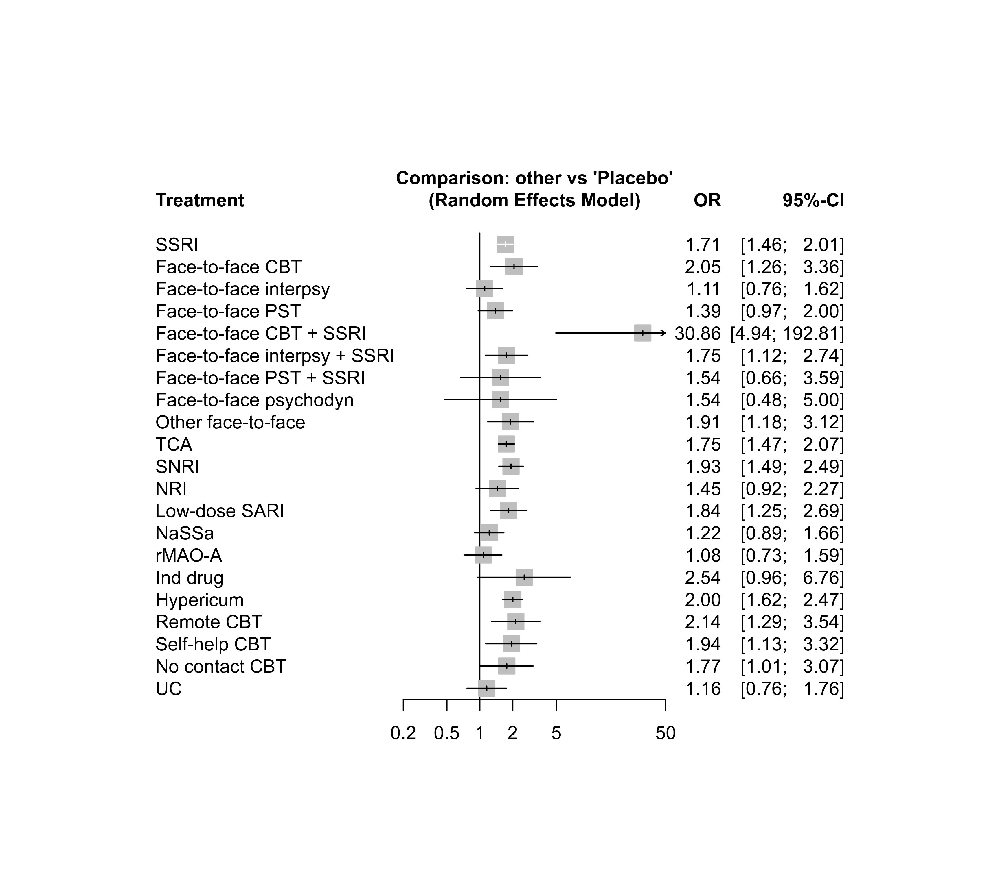
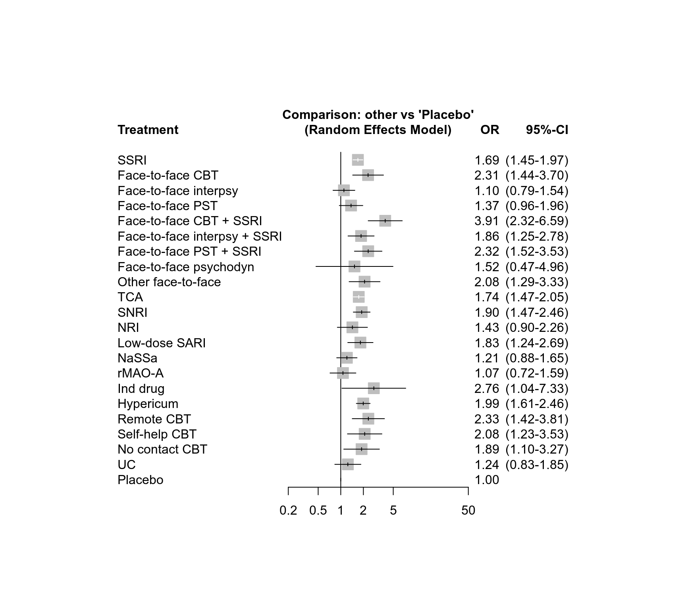

dat.linde2016.RdResults from 93 trials examining 22 interventions (including placebo and usual care) for the primary care of depression.
dat.linde2016The data frame contains the following columns:
| id | integer | study ID |
| lnOR | numeric | response after treatment (log odds ratio) |
| selnOR | numeric | standard error of log odds ratio |
| treat1 | character | first treatment |
| treat2 | character | second treatment |
This data set comes from a network meta-analysis of 22 treatments of depression in primary care (Linde et al., 2016), based on 93 trials (79 two-arm trials, 13 three-arm trials, and one four-arm trial). The primary outcome was response after treatment (yes/no), defined as a reduction from baseline by at least 50% on a depression scale. The data set contains log odds ratios with standard errors for all pairwise comparisons.
The interventions comprised both medical and psychological treatments, also in combination, including placebo and usual care (UC) (Linde et al., 2016). Pharmacological interventions were tricyclic antidepressants (TCA), selective serotonin reuptake inhibitors (SSRI), serotonin-noradrenaline reuptake inhibitors (SNRI), noradrenaline reuptake inhibitors (NRI), low- dose serotonin (5-HT2) antagonists and reuptake inhibitors (low-dose SARI), noradrenergic and specific serotonergic agents (NaSSa), reversible inhibitors of monoaminoxidase A (rMAO-A), hypericum extracts, and an individualized drug. Psychological interventions were cognitive behavioral therapy (CBT; four forms: face-to-face CBT, remote therapist-led CBT, guided self-help CBT, and no or minimal contact CBT), face-to-face problem-solving therapy (PST), face-to-face interpersonal psychotherapy, face-to-face psychodynamic therapy, and “other face-to-face therapy”. Combination therapies were face-to-face CBT + SSRI, face-to-face PST + SSRI, and face-to-face interpersonal psychotherapy + SSRI.
The data set was used as an example in Rücker et al. (2020) to illustrate component network meta-analysis using frequentist methods.
Linde, K., Rücker, G., Schneider, A., & Kriston, L. (2016). Questionable assumptions hampered interpretation of a network meta-analysis of primary care depression treatments. Journal of Clinical Epidemiology, 71, 86–96. https://doi.org/10.1016/j.jclinepi.2015.10.010
Rücker, G., Petropoulou, M., & Schwarzer, G. (2020). Network meta-analysis of multicomponent interventions. Biometrical Journal, 62(3), 808–821. https://doi.org/10.1002/bimj.201800167
### Show results of first three studies (first study has three treatment
### arms)
head(dat.linde2016, 5)
#> id lnOR selnOR treat1 treat2
#> 1 1 -0.570249 0.362066 TCA SNRI
#> 2 1 0.094727 0.339731 TCA Placebo
#> 3 1 0.664976 0.358845 SNRI Placebo
#> 4 4 0.916291 0.555278 TCA Placebo
#> 5 7 0.459532 0.510847 TCA Placebo
# \dontrun{
### Load netmeta package
suppressPackageStartupMessages(library(netmeta))
### Print odds ratios and confidence limits with two digits
settings.meta(digits = 2)
### Define order of treatments in printouts and forest plots
trts <- c("SSRI",
"Face-to-face CBT", "Face-to-face interpsy", "Face-to-face PST",
"Face-to-face CBT + SSRI", "Face-to-face interpsy + SSRI",
"Face-to-face PST + SSRI",
"Face-to-face psychodyn", "Other face-to-face",
"TCA", "SNRI", "NRI", "Low-dose SARI", "NaSSa", "rMAO-A", "Ind drug",
"Hypericum",
"Remote CBT", "Self-help CBT", "No contact CBT",
"UC", "Placebo")
### Conduct random effects network meta-analysis
net <- netmeta(lnOR, selnOR, treat1, treat2, id,
data = dat.linde2016, reference.group = "placebo",
seq = trts, sm = "OR", fixed = FALSE)
### Network graph
netgraph(net, seq = "o", number = TRUE)
### Show results
net
#> Number of studies: k = 93
#> Number of pairwise comparisons: m = 124
#> Number of treatments: n = 22
#> Number of designs: d = 40
#>
#> Random effects model
#>
#> Treatment estimate (sm = 'OR', comparison: other treatments vs 'Placebo'):
#> OR 95%-CI z p-value
#> SSRI 1.71 (1.46- 2.01) 6.61 < 0.0001
#> Face-to-face CBT 2.05 (1.26- 3.36) 2.86 0.0042
#> Face-to-face interpsy 1.11 (0.76- 1.62) 0.54 0.5897
#> Face-to-face PST 1.39 (0.97- 2.00) 1.77 0.0770
#> Face-to-face CBT + SSRI 30.86 (4.94-192.81) 3.67 0.0002
#> Face-to-face interpsy + SSRI 1.75 (1.12- 2.74) 2.47 0.0135
#> Face-to-face PST + SSRI 1.54 (0.66- 3.59) 1.01 0.3136
#> Face-to-face psychodyn 1.54 (0.48- 5.00) 0.72 0.4700
#> Other face-to-face 1.91 (1.18- 3.12) 2.62 0.0089
#> TCA 1.75 (1.47- 2.07) 6.40 < 0.0001
#> SNRI 1.93 (1.49- 2.49) 5.04 < 0.0001
#> NRI 1.45 (0.92- 2.27) 1.61 0.1066
#> Low-dose SARI 1.84 (1.25- 2.69) 3.10 0.0019
#> NaSSa 1.22 (0.89- 1.66) 1.25 0.2103
#> rMAO-A 1.08 (0.73- 1.59) 0.36 0.7158
#> Ind drug 2.54 (0.96- 6.76) 1.87 0.0613
#> Hypericum 2.00 (1.62- 2.47) 6.48 < 0.0001
#> Remote CBT 2.14 (1.29- 3.54) 2.94 0.0033
#> Self-help CBT 1.94 (1.13- 3.32) 2.42 0.0156
#> No contact CBT 1.77 (1.01- 3.07) 2.01 0.0446
#> UC 1.16 (0.76- 1.76) 0.69 0.4882
#> Placebo . . . .
#>
#> Quantifying heterogeneity / inconsistency:
#> tau^2 = 0.0174; tau = 0.1319; I^2 = 15.1% (0.0%-35.6%)
#>
#> Tests of heterogeneity (within designs) and inconsistency (between designs):
#> Q d.f. p-value
#> Total 102.45 87 0.1234
#> Within designs 58.07 54 0.3279
#> Between designs 44.38 33 0.0892
forest(net, xlim = c(0.2, 50))

### Additive component network meta-analysis with placebo as inactive
### treatment
nc <- netcomb(net, inactive = "placebo")
nc
#> Number of studies: k = 93
#> Number of pairwise comparisons: m = 124
#> Number of treatments: n = 22
#> Number of active components: c = 18
#> Number of designs: d = 40
#>
#> Results for combinations (additive model, random effects model):
#> OR 95%-CI z p-value
#> SSRI 1.69 (1.45-1.97) 6.81 < 0.0001
#> Face-to-face CBT 2.31 (1.44-3.70) 3.48 0.0005
#> Face-to-face interpsy 1.10 (0.79-1.54) 0.57 0.5693
#> Face-to-face PST 1.37 (0.96-1.96) 1.72 0.0856
#> Face-to-face CBT + SSRI 3.91 (2.32-6.59) 5.12 < 0.0001
#> Face-to-face interpsy + SSRI 1.86 (1.25-2.78) 3.05 0.0023
#> Face-to-face PST + SSRI 2.32 (1.52-3.53) 3.91 < 0.0001
#> Face-to-face psychodyn 1.52 (0.47-4.96) 0.70 0.4853
#> Other face-to-face 2.08 (1.29-3.33) 3.02 0.0025
#> TCA 1.74 (1.47-2.05) 6.53 < 0.0001
#> SNRI 1.90 (1.47-2.46) 4.91 < 0.0001
#> NRI 1.43 (0.90-2.26) 1.52 0.1291
#> Low-dose SARI 1.83 (1.24-2.69) 3.05 0.0023
#> NaSSa 1.21 (0.88-1.65) 1.18 0.2371
#> rMAO-A 1.07 (0.72-1.59) 0.33 0.7399
#> Ind drug 2.76 (1.04-7.33) 2.03 0.0420
#> Hypericum 1.99 (1.61-2.46) 6.41 < 0.0001
#> Remote CBT 2.33 (1.42-3.81) 3.36 0.0008
#> Self-help CBT 2.08 (1.23-3.53) 2.72 0.0064
#> No contact CBT 1.89 (1.10-3.27) 2.29 0.0219
#> UC 1.24 (0.83-1.85) 1.07 0.2862
#> Placebo 1.00 (1.00-1.00) -- --
#>
#> Results for components (random effects model):
#> OR 95%-CI z p-value
#> Face-to-face CBT 2.31 (1.44-3.70) 3.48 0.0005
#> Face-to-face PST 1.37 (0.96-1.96) 1.72 0.0856
#> Face-to-face interpsy 1.10 (0.79-1.54) 0.57 0.5693
#> Face-to-face psychodyn 1.52 (0.47-4.96) 0.70 0.4853
#> Hypericum 1.99 (1.61-2.46) 6.41 < 0.0001
#> Ind drug 2.76 (1.04-7.33) 2.03 0.0420
#> Low-dose SARI 1.83 (1.24-2.69) 3.05 0.0023
#> NRI 1.43 (0.90-2.26) 1.52 0.1291
#> NaSSa 1.21 (0.88-1.65) 1.18 0.2371
#> No contact CBT 1.89 (1.10-3.27) 2.29 0.0219
#> Other face-to-face 2.08 (1.29-3.33) 3.02 0.0025
#> Remote CBT 2.33 (1.42-3.81) 3.36 0.0008
#> SNRI 1.90 (1.47-2.46) 4.91 < 0.0001
#> SSRI 1.69 (1.45-1.97) 6.81 < 0.0001
#> Self-help CBT 2.08 (1.23-3.53) 2.72 0.0064
#> TCA 1.74 (1.47-2.05) 6.53 < 0.0001
#> UC 1.24 (0.83-1.85) 1.07 0.2862
#> rMAO-A 1.07 (0.72-1.59) 0.33 0.7399
#>
#> Quantifying heterogeneity / inconsistency:
#> tau^2 = 0.0208; tau = 0.1441; I^2 = 17.5% (0.0%-37.1%)
#>
#> Heterogeneity statistics:
#> Q df p-value
#> Additive model 109.12 90 0.0832
#> Standard model 102.45 87 0.1234
#> Difference 6.67 3 0.0831
forest(nc, xlim = c(0.2, 50))

# }